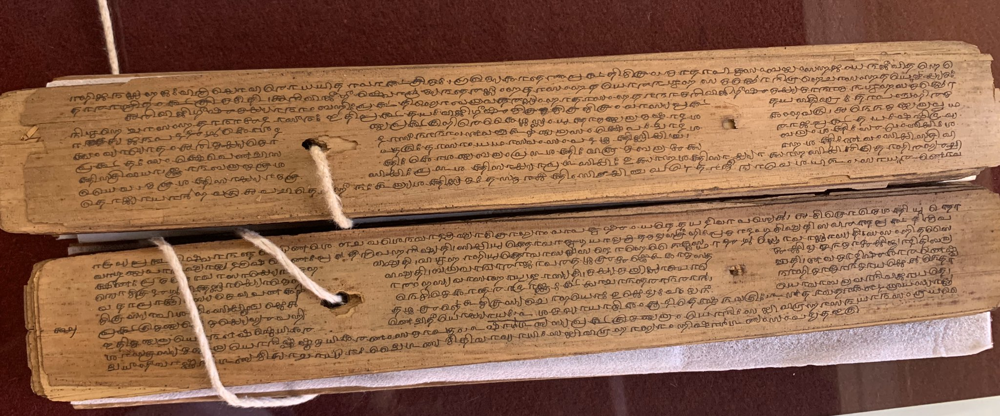
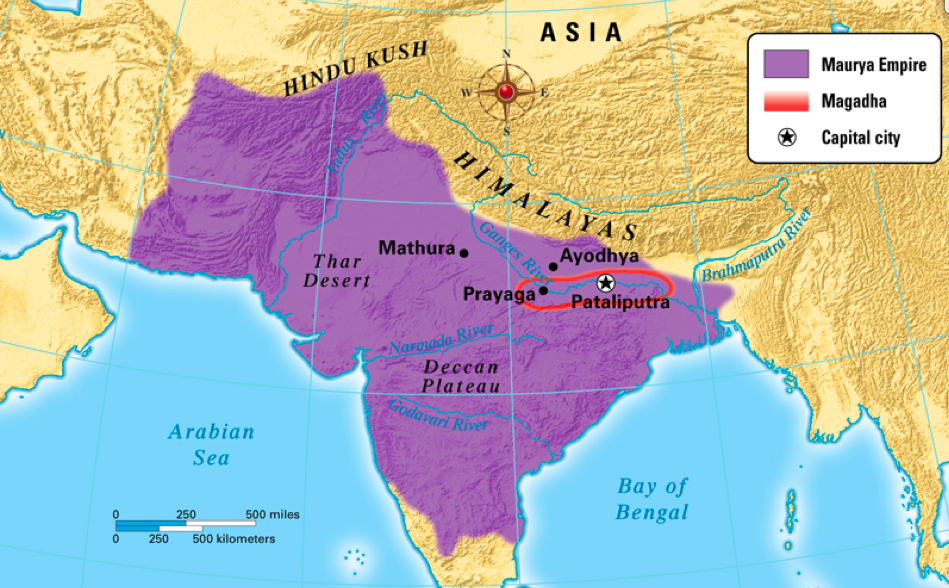
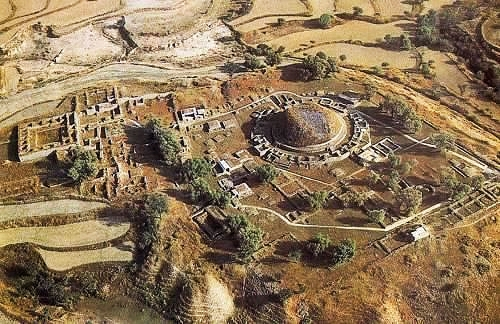
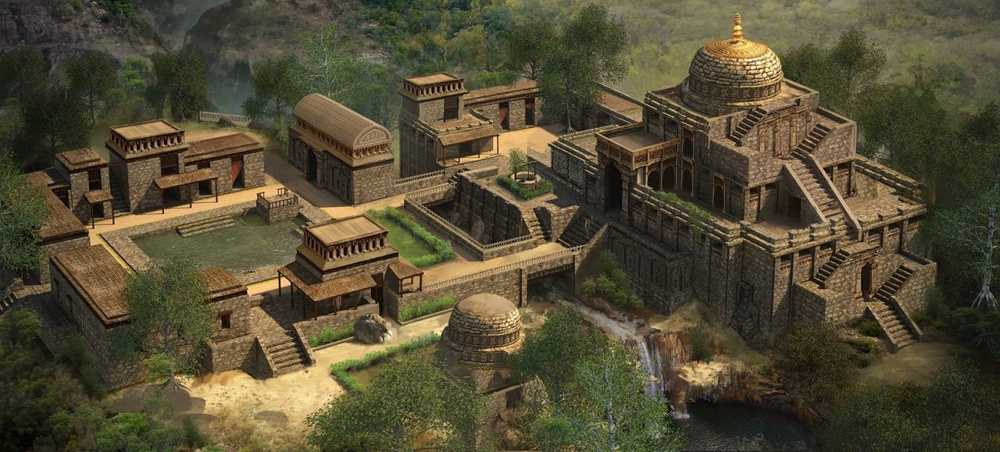
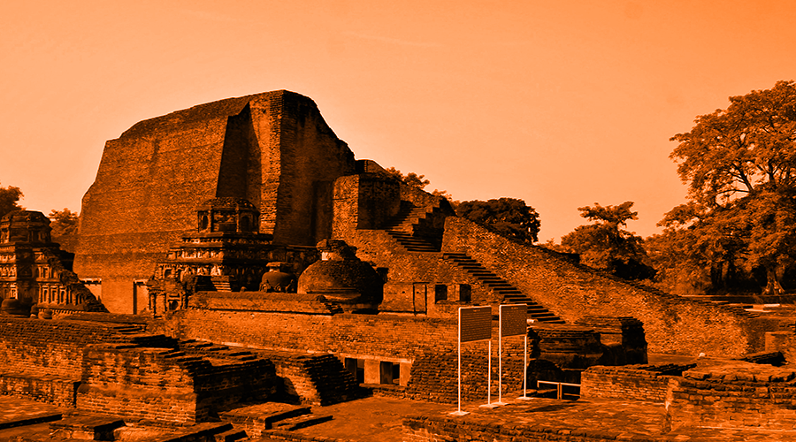
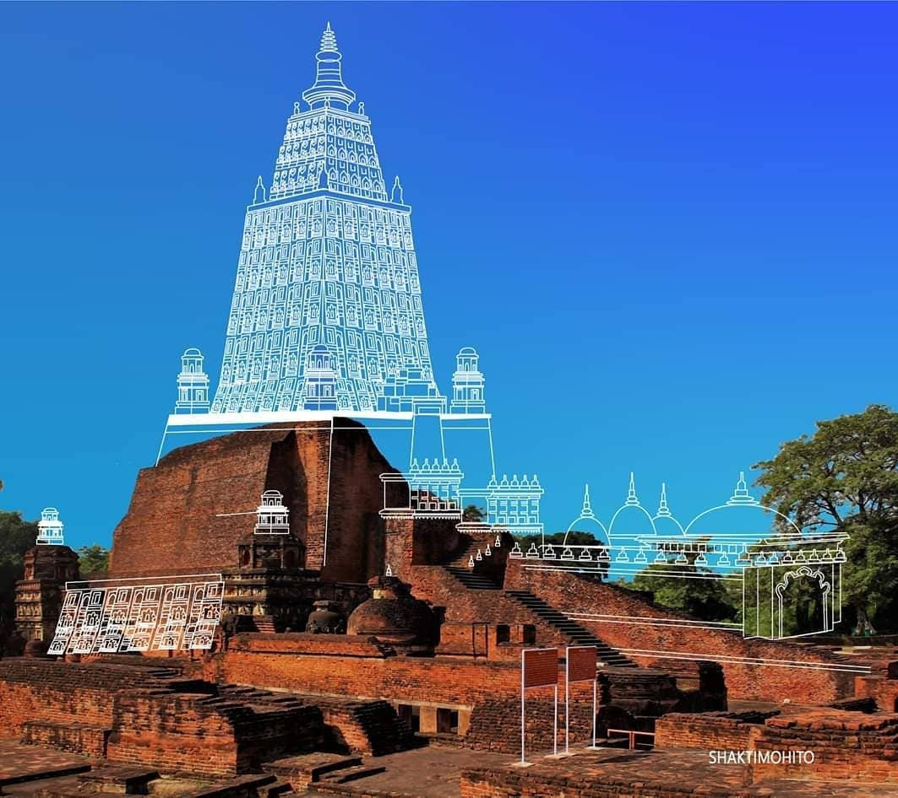
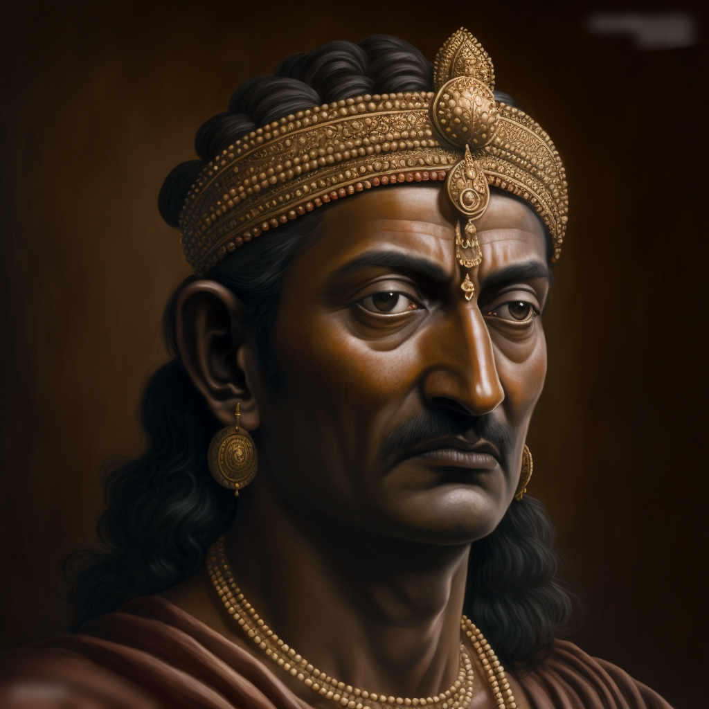
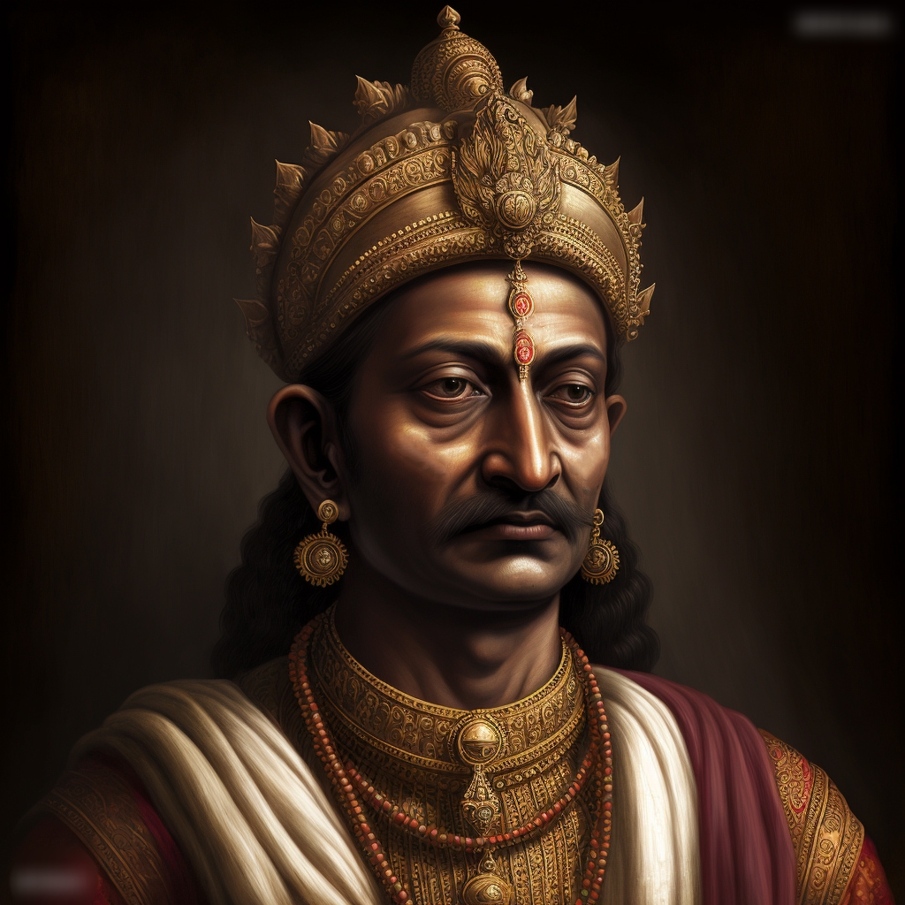
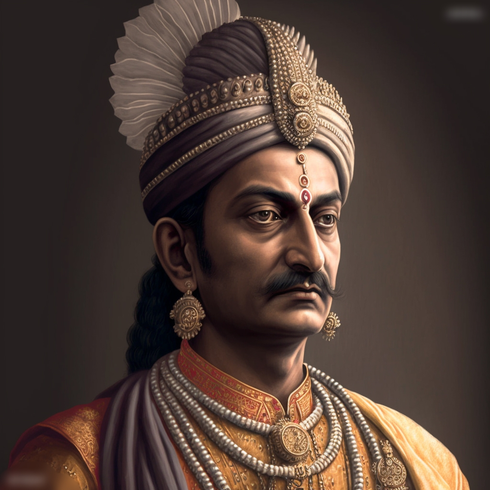

Those who are walking on the path of success after facing difficult situations in their life,
they know the name of Chanakya very well. The real name of Chanakya is Vishnugupta.
He is also known as Kautilya. Chanakya was a great teacher, philosopher, statesman, economist,
lawyer, prime minister and a diplomat.
His book "Arthashastra" laid the foundation of Indian politics and economics.
Therefore, "Arthashastra" written by Chanakya is called Chanakya Niti. And, Chanakya
is
called as
Machiavelli of India.

The sacred manuscripts of Arthashastra.
Before the rise of the Maurya Empire, North India was under the Nandas. Due to the lack of a
capable
monarchy,
robbers like Nandas were exploiting the people. Chanakya has a big hand in removing such robbers like Nandas
and establishing
the Maurya Empire. Chanakya worked as the Prime Minister and diplomatic adviser to both Chandragupta and
Bindusara.

The Mauryan Empire during 265 BCE.
Chanakya was born into a poor Brahmin family in 371 BC at Takshashila. His father is
Chanak (Chanana) and
his
mother is Chaneswari. In his childhood, Chanakya studied the Vedas and learned about politics. He
had a wisdom
tooth. There was a belief that having a wisdom tooth is the sign of becoming the king. His mother once scared
hearing an astrologer that "he will grow up to become king and forget me after becoming king". Then Chanakya
broke his wisdom teeth and promised his mother that "Mother, you don't worry. I will take good care of
you."
Chanakya studied at
Takshashila University, a renowned center of learning during that era. He was not good looking.
Everyone was
joking
about
his broken teeth, black color and crooked legs. Therefore, there was always a flame of anger in his eyes.
Despite,
He was known for his exceptional intelligence and deep knowledge of various subjects. He mastered subjects
such as economics,
politics, warfare, philosophy, and the Vedas, making him a well-rounded scholar.

The University of Takshashila (Taxila, modern-day Pakistan).

An aerial, reconstructed view of Takshashila University dated 2700 years ago.
After completing his education, Chanakya began working as a teacher in nearby areas including Takshashila,
Nalanda. Chanakya firmly believed that "a woman who is beautiful from body can only keep you happy for one
night. But a woman who is beautiful from mind keeps you happy for a lifetime". So he married a girl named
Yashodhara in his Brahmin lineage. She was also not beautiful like him. Her black color was
became a reason of
joke for some people. Once his wife went to a ceremony at her brother's house, everyone made fun of Chanakya's
poverty. Being Unhappy with this, his wife advised him to meet King Dhanananda and get some as a gift.

The University of Nalanda (Bihar, India).

A digitally reconstructed image of Nalanda University before it's destruction.
Dhanananda, the emperor of Magadha, organized a food meal for the Brahmins at Pushpapur. There
Chanakya was
also attended in the desire to receive gifts from King Dhanananda by giving the suggestions about unbroken
India. But, Dhanananda insulted Chanakya by looking at his ugly appearance and rejected his suggestions. Then
Chanakya got angry and vowed to destroy the Nanda Empire. Then Dhanananda ordered to arrest him. But Chanakya
escaped from there in the disguise.
After escaping from the court of Dhanananda, Chanakya hides his head and starts walking around Magadha.
During this time he became friend with his rival Dhanananda's son, Pabbata. Chanakya conquered
Pabbata's mind
and obtained a royal ring and went into the forest. Chanakya used his wisdom to earn 80 crores golden coins
from that royal ring. Having kept so many golden coins safely by digging a hole in the jungle, he went looking
for a hero who could finish Dhananand. Chanakya was looking for such a courageous who could destroy the Nanda
dynasty of Dhananand from the root. At the same time, Chandragupta was seen to the eyes of
Chanakya. Chanakya
gave his foster parents 1000 gold coins and took him with them to the forest. At present Chanakya had two
weapons to remove Dhanananda's head. If Chandragupta was one of them, there was another Pabbata. Chanakya
decided to train one of these two and make him emperor. He placed a small test between them. In this test,
Chandragupta removed Pabbata's head and become victories.

AI generated image of King Chandragupta, First Mauryan Emperor.
Chanakya was proud of Chandragupta who won the test he had placed. Chanakya gave him 7 years of rigorous
military training. Under Chanakya's guidance, Chandragupta became a capable warrior. Chanakya was keen in
overthrowing the Nanda dynasty of Dhanananda and establishing the Maurya empire. Hence, Chandragupta formed a
small army without much thought and attacked on Magadha, the capital of the Nandas. But Chandragupta's small
army was crushed by the huge army of Nandas. Chanakya's hand burned at the beginning only for making a hasty
decision. Chanakya and Chandragupta began to roam in disguise with frustration.
One day Chanakya and Chandragupta were roaming in Magadha in disguise. They were then enlightened by a
mother who was scolding her son. The mother was scolding to her son who get burnt his hand by putting in the
middle of the hot bread. "If you put your hands directly between hot bread, then it will burn you. Isn't
it?
Why are you doing like stupid Chanakya, who instead of seizing the border territories, has directly attacked
the capital and burned his hands. First eat the border of the bread, then put hand in the middle, then it
will
not burn". That mother was scolding her child like this. Chanakya and Chandragupta hear it secretly.
They
realized their mistake. He regretted that it was a big mistake to attack the capital Pataliputra without
seizing the border first. Chanakya bowed to the mother who enlightened him and went ahead.
On the advice of Chanakya, Chandragupta attacked on the borders and started taking them under his control.
Chandragupta trained the forest people who were roaming without jobs and included them in his army. When the
army became competent in every way, Chanakya took out the gold coins he had hidden in the forest and provided
all the necessary goods for the army. By doing this Chanakya strengthened the army. Some of the smaller kings
on the border disagreed to join Chandragupta's army. Chanakya killed such kings by poison girls.
From a very
early age, he had poisoned some girls with food and transformed them into poison girls. A kiss of
poison girls
was enough to kill the enemy mighty king. Furthermore, Chanakya took many such cunning moves and took control
of all the border places under the leadership of Chandragupta.
Thinking about the enemy in anger is of no avail. Chanakya thought calmly and devised a tactical strategy to
overcome the enemy. Seeing the right time at the behest of Chanakya, Chandragupta attacked on Magadha's
capital Pataliputra and killed Dhanananda. After his death, Chandragupta established the
Maurya Empire by
overthrowing the Nanda dynasty. In this way Chanakya's dream of establishing a united India empire came true.
At the same time his revenge on Dhanananda was also completed.
Chanakya became the prime minister of Chandragupta when he became the emperor of whole India. Chanakya
created a competent cabinet for good governance. He gave seperate ministries to all the ministers. He provided
all possible facilities for the welfare of the citizens. Chanakya appointed female bodyguards to Chandragupta
along with male bodyguards. Chandragupta Maurya was the first king to have female bodyguards in the
history.
Due to concerns over Chandragupta's life, Chanakya used to feed him poison since childhood. Still also he used
to add some poison in his meal. One day Chandragupta's wife Durdhara had his meal. Durdhara got
into the jaws
of death by eating poisoned food. She was pregnant at that time. Seeing Chandragupta sitting in fear of losing
his wife and child, Chanakya cut off Durdhara's womb and took out the baby from her belly.There were many
blood stains on the child's body. That is why that child was named Bindusara.

AI generated image of King Bindusara.

AI generated image of Chakraravartin Samrat Ashoka, Third Mauryan Emperor.
After Chandragupta, Bindusara became the new emperor of the Maurya Empire. Chanakya became
prime minister
for him also. But middle age Subandhu was jealous of the aged Chanakya. Subandhu was an ordinary
minister of
Bindusara's court. He wished to become Prime Minister. Therefore he used to sharpen the sword on Chanakya. One
day Subandhu narrated his birth story to Bindusara. Bindusara became angry on Chanakya when he came to know
that Chanakya is the cause for his mother's death. Due to the king's anger, Chanakya sacrificed everything and
joined the forest near Pataliputra.
A few days later, Bindusara repented that he should not have been angry on Acharya Chanakya. But now it was
too late. Chanakya was living like a monk in a small hut in the forest. Bindusara then ordered to Subandhu to
go forest and get back Chanakya by convincing them. But Chanakya's arrival was not liked by Subandhu. So he
found Chanakya's hut in the forest and burned him alive in it. In this way, Chanakya was killed
by Subandhu's
conspiracy.
Subandhu deliberately killed Chanakya and returned to the court and gave a false report to Bindusara that
"Chanakya committed suicide due to insult". Because of his hatred on Dhanananda, Chanakya made Chandragupta
the emperor from a street beggar and founded the Maurya Empire. But now he was killed by the people of that
kingdom only. The saying "The one who goes to take revenge, definitely joins graveyard one day
badly" became
true in case of Chanakya also. Even today, Chanakya's ideas, policies and machinations have brought success to
millions of people.
Chanakya's teachings and beliefs have inspired numerous individuals throughout history, and have provided a
philosophical and practical framework for individuals seeking inspiration in various aspects of life. Whether it
is in the realm of leadership, strategy, ethics, personal development, or nation building, Chanakya's teachings
continue to inspire and guide individuals towards success and the betterment of society.